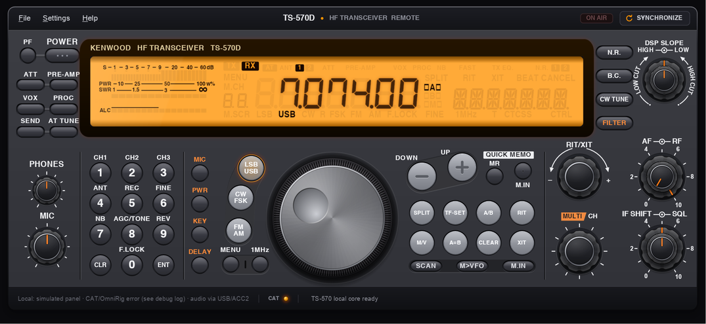

TS-570D Remote Control Software (Windows, WPF, OmniRig)
ts570d_remote is a Windows desktop app that provides a remote-control style UI for the Kenwood TS-570D transceiver.

- Kenwood TS-570D control software concept
- Built with C#, WPF, and OmniRig CAT
- Focused on local Windows operation with radio state sync